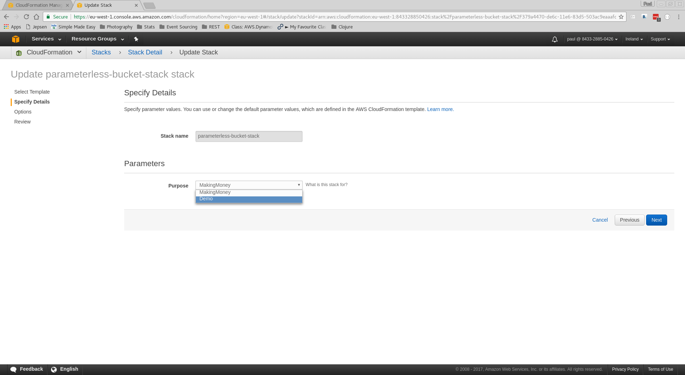
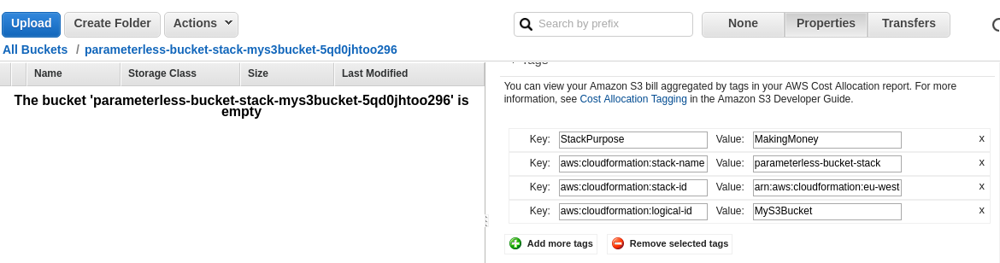

Infrastructure as Code
with AWS CloudFormation
Why?
Why do you need something like CloudFormation?
Why else do you need CloudFormation?
- Microservices are the new hotness
- Smaller services
- More, smaller infrastructure
- PaaS
Repeatability
- Consistency between dev, test, production
- Multi-region
- Reuse your work
Compliance
- Audit your changes
- Apply security right everywhere
Automation is hard!
Declarative vs. Imperative
(or why not just script it?)
- cross-references and ordering
- execution plans
- error handling
- modularity
- less cognitive load
CloudFormation Templates
CloudFormation Templates
Basic Structure (YAML)
AWSTemplateFormatVersion: "2010-09-09"
Description:
Parameters:
Resources:
Outputs:
The Simplest Template?
This may be the simplest template that produces useful infrastructure!
AWSTemplateFormatVersion: "2010-09-09"
Description: >
Simplest CloudFormation Template - An S3 Bucket
Resources:
MyS3Bucket:
Type: AWS::S3::Bucket
Provision with the AWS Console
Save the template file locally, then create a stack with it on CloudFormation
Provision with the AWS Console
Give the stack to be created from this template a name.
Provision with the AWS Console
Review settings and create the stack.
Provision with the AWS Console
CloudFormation reports stack is being created. Note the stack description.
Provision with the AWS Console
The S3 bucket is being created
Provision with the AWS Console
The stack is created and an S3 bucket with a generated name exists.
Parameters, Refs, and Stack Updates
Let's tag the bucket with a purpose. We'll use a parameter to specify the value.
Parameters:
Purpose: <---------------------- add a parameter "Purpose"
Type: String
Resources:
MyS3Bucket:
Type: AWS::S3::Bucket
Properties:
Tags:
- Key: StackPurpose
Value: !Ref Purpose <--- ref the parameter
Parameters, Refs, and Stack Updates
Parameters may be constrained, helping to catch invalid data earlier.
Parameters:
Purpose:
Type: String
Description: What is this stack for? <----- describe it!
Default: MakingMoney <-------------- set a default value
AllowedValues: <--------------- constrain allowed values
- MakingMoney
- Demo
Resources:
MyS3Bucket:
Type: AWS::S3::Bucket
Properties:
Tags:
- Key: StackPurpose
Value: !Ref Purpose
Update Stack
Select the existing stack and choose "Update Stack"
Update Stack
Select new template to update stack

Update Stack
Set the new parameter value

Update Stack
Review the "Change Set" specified by your update
Update Stack
CloudFormation begins updating the stack
Update Stack
Update is complete... review S3 bucket tags

Stack Deletion
Before deleting the stack, put something in the S3 bucket.
Stack Deletion
In CloudFormation, select the stack and choose Delete Stack
Stack Deletion
We can't automatically delete a non-empty S3 bucket.
Alternatives to the Console
AWS CLI (documentation)
aws cloudformation create-stack --stack-name demo-stack --template-url ... --parameters ...
AWS SDKs
12 SDKs at time of writing
Integrations
Terraform resource
Cross-References
Refer to parameters, as in tagged bucket example
Parameters:
Purpose: <----------------------- parameter logical name
Type: String
Resources:
MyS3Bucket:
Type: AWS::S3::Bucket
Properties:
Tags:
- Key: StackPurpose
Value: !Ref Purpose <---- cross-reference
Cross-References
Refer to other resources
Resources:
MyS3Bucket: <------------------------ logical name
Type: AWS::S3::Bucket
MyLogGroup:
Type: AWS::Logs::LogGroup
Properties:
LogGroupName: !Ref MyS3Bucket <--- provisioned bucket name
Intrinsic Functions
Compute values at deployment-time, like string joins
Resources:
MyS3Bucket:
Type: AWS::S3::Bucket
MyLogGroup:
Type: AWS::Logs::LogGroup
Properties:
LogGroupName: !Join ["-", [!Ref MyS3Bucket, logs]]
See also Split, Sub, GetAtt, etc.
Pseudo-Parameters
Values that provided by context, used with !Ref
!Ref "AWS::Region" <-- region stack is deployed in
!Ref "AWS::StackName" <-- name of stack being deployed
...plus a few others.
Nested Stacks
CloudFormation's way of reusing and composing stacks
AWS Resources...
Nested Stacks
CloudFormation's way of reusing and composing stacks
...assembled into a stack...
Nested Stacks
CloudFormation's way of reusing and composing stacks
...makes stuff you want
Reusing our Bucket Stack
Our S3 stack can be nested without modification...
Resources:
FirstBucketStack:
Type: AWS::CloudFormation::Stack
Properties:
TemplateURL: https://s3.../01-parameterless-s3-bucket.yaml
SecondBucketStack:
Type: AWS::CloudFormation::Stack
Properties:
TemplateURL: https://s3.../01-parameterless-s3-bucket.yaml
Reusing our Bucket Stack
Our S3 stack can be nested without modification...

Creating a Nested Stack
Creating a Nested Stack

Creating a Nested Stack
Creating a Nested Stack
Nested Stack Usability Tip
Generated names are prefixed with stack context
{stack}-{logical}-{rand}-{logical}-{rand}
How CloudFormation Works
Nested stacks show how CloudFormation works
Nested Stack Performance Tip
Prefer wide and shallow, not narrow and deep!
Nested Stacks
How to reference something in a nested stack?
Step 1: Define the value as an output
Resources:
ImageBucket: ...
Outputs:
BucketName:
Description: User upload image bucket
Value: !Ref ImageBucket
Nested Stacks
How to reference something in a nested stack?
Step 2: Ref the value from the parent template
Resources:
ImageBucketStack: ...
Thumbnailer:
Type: ...
Properties:
BucketName: !GetAtt ImageBucketStack.Outputs.BucketName
Cross-Stack References
Export an output value from one stack
Outputs:
BucketName:
Value: !Ref ImageBucket
Export:
Name: !Sub "${AWS::StackName}-BucketName"
Import it into another with Fn::ImportValue
Parameters:
ImageBucketStackName:...
Resources:
MyResource:
Thumbnailer
"Fn::ImportValue":
!Sub "${ImageBucketStackName}-BucketName"
Cross-Stack References
Cross-Stack or Nested?

Nested Stack Problems
- Opaque to:
- CloudFormation Designer
- CloudFormation Console
- Change Sets
- Unstructured parameters could be limiting
- No libraries or dependency management for templates
- Can't be packaged with the code they need
CloudFormation Designer
A boxes-and-arrows UI to draw or render a CloudFormation template
I would show you, but it doesn't work with YAML templates.
Verges on useless because of its limitations.
Change Sets
Announced last year, see what an update will do
Save the change set to be applied later. Awesome?
Change Sets
Unfortunately, when you start using Nested Stacks...
...many of your changes look like this.
Custom Resources
Provision all the unsupported things!
Custom Resources
Provision all the unsupported things!
for example...
Custom::SalesforceSandboxCustom::PingdomPingCustom::SlackNotifierCustom::BleedingEdgeAwsThingCustom::DatabaseMigration
Custom Resources
Handle create, update and delete messages
Custom Resources
Updates may "replace" resources!
Replace = create new then delete old
Custom Resources
Example:
AppHealthcheck:
Type: Custom::PingdomPing
Properties:
ServiceToken: !GetAtt PingdomPingCustomResource.Arn
PingTargetUrl: !GetAtt AppUrl
Custom Resources
Some tips...
- Use standard resources where you can
- Use libs to help write custom resources
- Ensure S3 access in private subnets
- Think about how to manage your custom resources
- Implement with AWS Lambda, not SNS + EC2
- Think idempotently and defensively
- Be aware of PhysicalResourceId and "replacement" on update
Error Handling
CloudFormation will attempt to rollback on error
Rollback Failed state could occur if:
- resource were changed outside of CloudFormation
- IAM permissions prevent the rollback action
- Limits prevent rollback
- and many other reasons
Rare, if disciplined!
CloudFormation Workflow
Our Original Workflow
- One big git repository
- Several deployment shell scripts
Our Current Workflow
- ~50 small "component" repos
- Original repo is still there
- CloudFormation everywhere
The Future... CodePipeline?
AWS CodePipeline supports CloudFormation artifacts as of Nov 2016!
- Automated pipeline through deployment "stages"
- IAM integration
- "Release Change" functionality
CodePipeline Example
Serverless Application Model
Simplified spec and deployment support for AWS Lambda-based applications:
- API Gateway
- DynamoDB
- Lambda Functions
- Event triggers
But doesn't work as a CloudFormation Nested Stack!
Service Catalog
Create "Portfolios" of "Products"
Lets you pack up CloudFormation templates so that IAM users can have push-button launch.
Blog posts suggest it's aimed more at larger enterprises
General Tips
- Introduce CloudFormation as early as possible
- Don't update CloudFormation-managed resources yourself
- Have at least one test environment and test EVERYTHING
- Integrate your infra code with your CI/CD pipeline
- Keep infra code with the code it provisions
- Organise your templates to group things that change together
- Use multiple AWS accounts, one per "environment"
General Tips
- Consider both Nested Stacks and Cross-Stack References
- Be aware of how CloudFormation works
- Use Custom Resources to provision custom things
- Consider Terraform and other options for non-AWS resources
CloudFormation vs. Terraform
| Feature | CloudFormation | Terraform |
|---|---|---|
| Rollback on Error | Y | n |
| Cross-Provider | n | Y |
| Execution Plan | ~ | Y |
| Managed State | Y | n |
| IAM Integration | Y | n |
| Open Source | n | Y |
Questions?
Resources
AWS Documentation
Other Resources
- Infrastructure as Code - Kief Morris
- Github widdix/aws-cf-templates at al.
- Online AWS Cert Training (eg. PluralSight, LinuxAcademy)
Thanks!
- Thanks for coming!
- Thanks to Sheffield DevOps for hosting!
- Cover Image credit: By Swandau (Own work) [CC BY-SA 3.0 (http://creativecommons.org/licenses/by-sa/3.0)], via Wikimedia Commons